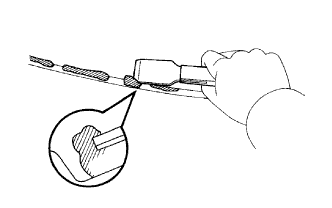
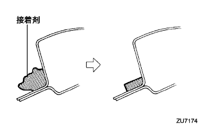

Front side fix window Assisted |
| 1. Precautions when removing the front side hype kus window |
If the front side -fix window clip is damaged in the front side fix window installation, the front side fix window is re -maintained by using a butyl tape instead of a damaged clip.Use is possible.
| 2. Front side fix window Asseming cleaning |
|  |
Use a scraper to cut off the adhesive remaining in the glass.(When the glass is reused)
Clean the glass outer periphery with white gasoline.
| 3. Long -side fix window Assigned to RH |
Body mounting face cleaning
|  |
If the adhesive on the vehicle is remarkably uneven, smooth with a knife.
Work before glass installation
Apply a dedicated primer to the part where the body surface on the vehicle is exposed (the adhesive is not stiff).
Apply a dedicated primer to the glass adhesion.
Paste the butyl tape to the damaged clip mounting position.(In case of clip damage due to glass reusing)
Set the adhesive on the sealant gun.
Cut out the tip of the nozzle as shown in the figure, and apply the adhesive into a bead.
Put the suction rubber.
Glass installation
Make the clip and attach the glass to the vehicle.
Press the entire glass lightly to completely adhere.
Fix the protruding and deficiency of the adhesive with a spatula.
Hold the glass with a protective tape until the adhesive is cured.(In case of clip damage due to glass reusing)
| 4. Water leak inspection and repair |
After the adhesive, apply water from the outside of the vehicle to confirm that there is no leak in the room.
In the event of a leak, the three cement black is applied after drying.
| 5. Lonely pillar garnish RH installation |
 |
Put the claws at the bottom of the garnish first.
Match all clips and attach the front pillar garnish RH.
| 6. Lon pillar garnish LWR RH installation |
 |
Match the claws and attach the front pillar garnish LWR RH.